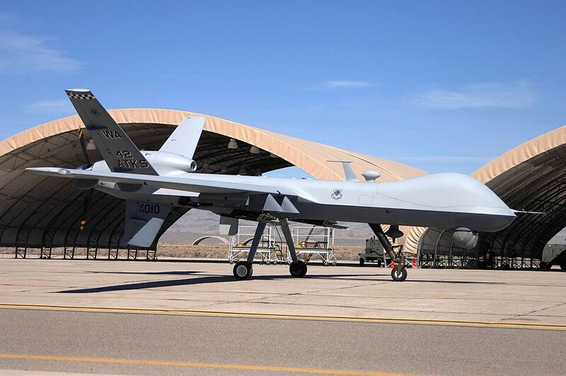

Charles Hall's "Tall Whites"
Indian Springs, Nevada, 1960s

Charles James Hall says that as an Air Force weather observer on the Nellis ranges near Indian Springs (now Creech Air Force Base) in the mid-1960s, he repeatedly met tall, pale, humanlike beings he calls the "Tall Whites," who he says kept craft at a hidden base in the area. He told the story in his Millennial Hospitality books starting in 2002. UNVERIFIED: no records or other witnesses have confirmed his account. 1
Open in the interactive Watcher
Related
- Charles Hall Person
- Tall Whites Person
Sources
- Nordic aliens Wikipedia